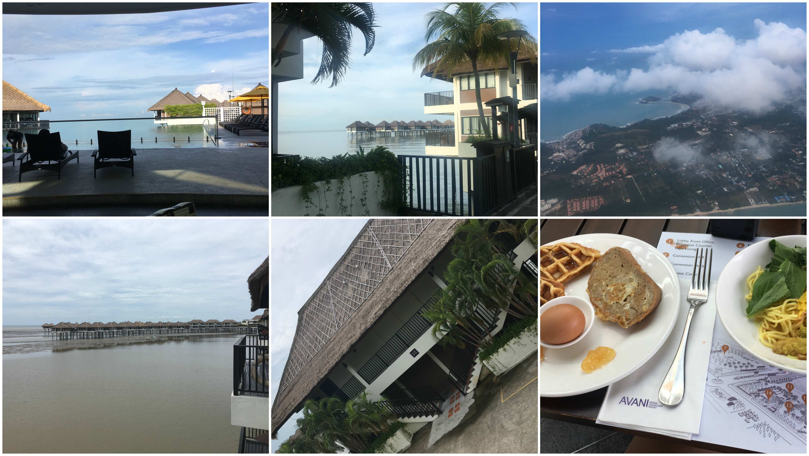

Long time no logg
Nu har jag inte skrivit på ett tag, det kan förklaras med att våra dagar har varit väldigt händelselösa, relativt sett till Bangkok. Som jag skrev för några dagar sedan brände vi oss ganska kraftigt i solen när i var på stranden. Läxan lärd bla bla o.s.v. Så vi har hållt oss inomhus mestadels av tiden. Undantagen har varit när vi gått och ätit mat. Då har vi haft 2 "stammisställen" på ön. För frukost har vi gått till ett liten kioskliknande ställe som serverar toastad baguette med olika pålägg, och goda fruktshakes och juicer. Det är också väldigt billigt och finns alltid plats vid borden som har utsikt från en kulle över vattnet. Mycket bra ställe som jag nästan enbart därför vill besöka Koh Tao igen. Till middag har vi besökt Simple Lifes bar/restaurang, inte för att vi visste vad Simple Life var, men tydligen så är det en dykarresort. I vilket fall som helst så åt vi middag där första kvällen och fortsatte sen på det spåret de kommande dagarna. Allt från thaimat till europeisk pasta fanns, vilket dock var utbudet på 90% av alla andra ställen på ön, så det var kanske inte särskillt unikt i sig. Med undantag av frukost/middag gjorde vi inte särskilt mycket mer än slappa på hotellet. Vi gick och köpte dricka och snacks på 7eleven och sen tog vi det lugnt. Det är förvånansvärt hur trött man blir av att vila. Vi lyckades trots slappandet somna vid 21-22-tiden varje dag. Det var vår tid på Koh Tao!
Även om det kan låta lite tråkigt så tycker jag inte att det är ett så stort problem att vi "missat" flera dagar. Jag skrev förra gången att jag ändå vill tillbaka dit någon gång, så det här var bara ett litet smakprov. Nu forsätter vi från och med igår!
Igår lämnade vi Koh Tao och satte sikte på Malaysia. Vi gick upp vid 8-tiden och packade ihop det sista på morgonen. Vi åt frukost en sista gång på stammisstället och gick sen ner till hamnen för att hoppa på vår båt tillbaka till Koh Samui för att där ta flyget till Kuala Lumpur. Jag trodde att det skulle bli en ganska lugn resa, men redan vid hamnen blev det lite stressigt. Vi letade reda på vart vi skulle hämta ut våra biljetter och såg då att det var en kö som sträckte sig runt nästan hela byggnaden till båten. Det var också oklart om vi ens var i rätt kö (tur nog så var vi det) då det var dåligt skylltat och den enda infon vi hade var namnet på båten vi skulle åka med, Lomprayah - vilket också visade sig vara namnet på hela redderiet och ALLA deras båtar. Efter den långa kön blev det att stressa (väldigt långsamt stressa) ombord på båten då den redan var försenad. Väl ute på öppet vatten var det vågigt och sjösjukan satte in för oss och majoriteten av passagerarna, illamåendet var ganska påfallande men jag så inte personligen någon spy. Många satt med påsar redo dock.
Väl i land på Koh Samui insåg jag att vi inte hamnat på samma pir (som låg 5min från flygplatsen) som vi åkte till Koh Tao, utan på en som låg ungeför ~30 minuter från "centrum". Vi tog därför en taxi in till flygplatsen och åt pizza och glass där. Sen inväntade vi vårt flyg, som naturligtvis också var försenat. Det verkar som om jag konstant kommer bli stoppad i tullen för min powerbank. Den ser ganska biffig ut och gränsen för vad man får ha på ett flyg är 21 000 mAh, min skulle nog lätt rymma mer än vad den gör, knappa 16 000 mAh. Så det blir inspektion varje gång! Jag trodde också att flygresan skulle ta 2 timmar, som det stod på pappret. Jag insåg dock inte att vi passerade in i en ny tidszon och att flyget bara tog 1 timme.
Väl i på flygplatsen i Kuala Lumpur stog vi i kön för passkontroll i nästan en timme. Väldigt oeffektiv process dem verkar ha. Kan vara att vi som Svenskar är ganska priviligerade i vårat resande, vi behövde inga andra papper ifyllda än passet. För mig tog det bara 30 sekunder att passera kontrollen som bestod av att man lämnade in passet, tog ett foto, och tog fingeravtryck. Medans andra resande från till synes mellanöstern/asien hade andra papper med sig och vart kvarhållna tre till fyra gånger så lång tid som oss. Ett äldre par med asiatiskt ursprung från Australien bakom oss verkade oroliga inför för processen, att dem inte fyllt i några papper o.s.v. Så mannen frågade mig om hur det fungerade, jag fick svara att det här var första gången jag var här också och att "jag hoppas man inte ska behöva annat än passet". Det såg ut som att dem inte hade några större problem att ta sig igenom heller!
Till slut hittade vi vår transfer till Hotellet. Flyget var sent och vi hade stått i passkontrollen i nästan en timme så det började bli ganska sent. Det åskade en hel del så det var en väldigt cool syn under resan. Dock måste chaufören haft en dödslängtan, han körde som jag brukar göra mitt i natten när ingen annan är ute. Fast i vårt fall regnade det, det var nästan kolsvart ute, flera andra bilar på vägen, och väldigt små vägar. Men så in i helvete heller tänkte han, och körde om 4 bilar, i en kurva, i 80, medans vi fick möte ett par hundra meter längre fram. Mycket otrevlig resa, hade jag inte varit så trött hade jag sagt till honom. För holy shit vad han körde.
Äntligen framme på resorten, nu blir det 3 lyxiga dagar framför oss! Vet inte hur mycket det blir att skriva härifrån heller då jag fortfarande måste "vila" ansiktet. Ser ut som 3e gradens brännskador på näsan... Dock gör det inte ont, det ser bara helt åt helvete ut.
